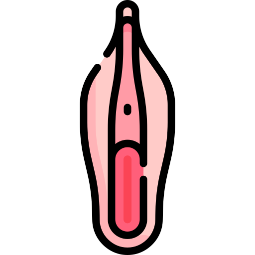

Tanda-Tanda Persalinan
Ibu dan keluarga harus waspada jika muncul tanda-tanda berikut:
 Kontraksi (His)
Kontraksi (His)
Mulas yang semakin kuat, sering, dan teratur.

Lendir Darah
Keluarnya lendir bercampur darah (bloody show).
 Pecah Ketuban
Pecah Ketuban
Keluarnya air ketuban dari jalan lahir.
 Pembukaan
Pembukaan
Adanya pembukaan serviks (hasil cek bidan).
Tahapan Persalinan (Kala I - IV)
Berdasarkan standar asuhan, persalinan dibagi menjadi 4 tahap penting:
Kala I (Pembukaan): Dimulai dari kontraksi teratur sampai pembukaan lengkap (10 cm). Pada primigravida biasanya berlangsung 12 jam.
Kala II (Pengeluaran Bayi): Dimulai dari pembukaan lengkap sampai bayi lahir. Ibu akan merasa ingin meneran seperti ingin BAB.
Kala III (Pengeluaran Plasenta): Dimulai setelah bayi lahir sampai plasenta (ari-ari) lahir lengkap. Biasanya berlangsung 5-30 menit.
Kala IV (Observasi): Masa 2 jam setelah plasenta lahir. Bidan akan memantau perdarahan, kontraksi rahim, dan keadaan umum ibu.
Tips Persalinan Nyaman
Tarik napas panjang dari hidung, buang perlahan. Tidak mengeluarkan suara saat meneran dan membuka mata melihat ke arah perut seperti sedang BAB
 Makan & Minum
Makan & Minum
Cukupi energi ibu di sela-sela kontraksi.
 Pendamping
Pendamping
Dukungan suami/keluarga bikin ibu lebih tenang.
🎀 Ceklist Persiapan Persalinan
"Yuk, cek apa saja yang sudah masuk tas, Bu!"
- 📖 Buku KIA (Jangan sampai ketinggalan!)
- 💳 KTP, Kartu BPJS & Fotokopinya
- 👕 Baju Ganti Ibu (Bukaan depan/Kancing)
- 🧼 Alat Mandi (Sabun, Gigi, Sikat)
- 👶 Pakaian Bayi, Bedong, Topi & Sarung Tangan
- 🧷 Pembalut Khusus Ibu Melahirkan
- 🧴 Minyak Telon & Perlengkapan Bayi
- 🩸 Sudah ada Calon Pendonor Darah?
- 🚗 Kendaraan yang siap antar jemput
📝 Input Data Persalinan
🆘 Keadaan Darurat
Klik tombol di bawah ini untuk bantuan cepat:
📍 Cek Rute & Jarak ke Puskesmas
Tips: Pastikan bensin kendaraan selalu terisi penuh dan nomor telepon penting sudah disimpan di kontak HP suami.